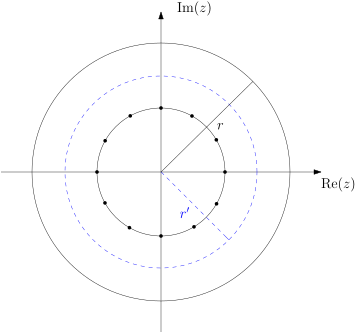

6. Quadrature#
In quadrature (numerical integration), the goal is to approximate
with a weighted sum
where \(\{w_k\}_{k=0}^n\) are referred to as the quadrature weights, and \(\{x_k\}_{k=0}^n\) are the nodes. \(Q\) and \(Q_n\) are both linear operators mapping functions that are continuously differentiable on \([a,b]\) (we’ll denote this space with \(f \in C[a,b]\)) onto the reals \(\mathbb{R}\).
Similarly to interpolation, we are free to choose the following parameters:
the nodes \(\{x_k\}_{k=0}^n\),
the way we represent the approximate integrand, which determines the weights \(\{w_k\}_{k=0}^n\).
Question
If you’re given the node locations, what is the most intuitive way to approximate the integrand? What weights does that give you?
4.1 Interpolatory quadrature#
Perhaps the most natural way to proceed if given a set of nodes is to fit an interpolating polynomial through them, and replace the exact integrand \(f\) with its interpolated version (say, in the Lagrangian basis) \(Lnf\), giving
where \(L_n: C[a,b] \to P_n\), the space of degree-\(n\) polynomials. This form of quadrature is interpolatory quadrature, and has weights
(Recall that \(q_n(x) = \prod_{k=0}^n (x - x_k)\).)
Proof: using the form of the interpolating polynomial in the Lagrange basis, we write
which allows us to read off
This matches the expression we wanted to show after a bit of algebra.
This method integrates all polynomials up to degree-\(n\) exactly, since their integrand is exactly represented. This property determines the weights exactly.
A subset of interpolatory quadrature rules whose nodes are equidistant are called Newton-Cotes. For order \(n\), their nodes are
and their weights are given by
The weights are symmetric, meaning \(w_k = w_{n-k}\).
Question
Show this yourself!
Proof: Use the substition \(x = a + hz\), \(x_k = a + kh\), and rewrite \(q_{n+1}\) and \(q'_{n+1}\):
Substituting these into (), we get the expression required. The symmetry of weights can be shown making the substitutions \(k \to n - k\), \(z \to n - y\) (check this yourself!).
Setting \(n = 1\), we get the simplest form of Newton-Cotes, the trapezoidal rule
Question
Any initial guesses for what order in \(h\) the error of this rule is?
The error of this rule for any \(f \in C^2[a,b]\) is
Proof: This is a common trick used in deriving error bounds for quadrature. Consider the Peano kernel,
which is non-negative on \([a, b]\), with \(\kappa'(a) = \tfrac{b-a}{2}\), \(\kappa'(b) = \tfrac{a-b}{2}\), and \(\kappa''(x) = -1\) on \([a, b]\). Then take
integrate it by parts twice,
and substitute \(\kappa\) and its derivatives to get
Now by bounding the Peano integral, we see that we can bound the error on the trapezoidal rule:
This is low-order algebraic convergence.
Question
Can we do better?
We can try to improve this in various ways:
Lay down more (equispaced) nodes: this unfortunately suffers from the same issue as interpolation with equispaced nodes. Namely, the approximate integrand will start blowing up (we’ll state this more formally soon) with the \(l_j\) basis functions: \(w_j = \int_a^b l_j(x)\mathrm{d}x\), and amplifies roundoff error via catastrophic cancellation.
Lay down more nodes, but space them differently: this is the basis of the next section!
Use the same \(n\), but shorten the integration interval by chopping \([a,b]\) up into smaller sections. This approach is generally preferred in practice, since the width of interval and even the quadrature rule can be adapted to the local properties of the integrand. A drawback, however, is loss of continuity (in the higher derivatives) at the edges of the sections. We’ll explore this further below.
Let us split \([a,b]\) into even chunks of size \(h\), and apply the trapezoidal rule to each. This is the composite trapezoidal rule (CTR). Its nodes and weights can be summarized as
Question
What will the error of the composite trapezoidal rule be?
In the worst case, the error of each section will add (and there is a total of \(\tfrac{b-a}{h}\) them), so we can say that
Notice that this is an order lower than the trapezoidal rule, overall farily slowly convergent. We will, however, see the power of this simple quadrature rule on a certain class of functions later, where it blazes past other methods.
But for now, let’s review some theory on what can reasonably expected of quadrature rules.
Definition
Consider the sequence of quadrature rules \(\{ Q_n \}_{n=0}^{\infty}\), such that \(Q_n f = \sum_{j=0}^n w_j^{(n)} f(x_j^{(n)})\). \(Q_n\) is convergent if \(Q_nf \to Qf\) as \(n \to \infty\) \(\forall f \in C[a,b]\).
Recall that this was not possible for interpolation rules! We could always construct an \(f\) such that the sequence \(\{L_n\}\) wouldn’t converge, for any given set of nodes.
Theorem (Szeg”{o})
\(Q_n\) is convergent if and only if
\(Q_n\) is convergent for all polynomial \(f\)-s, and
There is a constant \(c\) such that \(||Q_n||_{L_{\infty}} := \sum_{j = 0}^n |w_j^{(n)}| \leq c\) \(\forall n\).
This formalizes what we already suspected about quadrature with an increasing number of equispaced nodes: if the weights grow in an unbounded manner as \(n \to \infty\), the rule is not convergent (always inspect the weights as \(n\) grows!). However, for \(Q_n\) to be convergent, it is enough for the weights to be nonnegative in the second criterion:
Corollary
If \(Q_n\) is convergent for all polynomial \(f\)-s and \(w_j^{(n)} \geq 0\), then \(Q_n\) is convergent.
Proof: If the weights are non-negative, then
Apart from ensuring that the second criterion is satisfied, positive weights are advantageous since for a given \(c\), they minimize the accumulation of roundoff error.
Question
Is the CTR convergent?
It is: it’s convergent for all polynomials since its error, \(\propto ||p''||_{L_\infty}\) for polynomials \(p\), is bounded, and its weights are non-negative. However, it is only slowly convergent. A better approach may be Gaussian quadrature.
4.2 Gaussian quadrature#
Additional resource
Abramowitz & Stegun: Handbook of Mathematial Functions with Formulas, Graphs, and Mathematical Tables
This family of quadrature formulae were designed to yield an exact answer for polynomials of as high a degree as possible, which is typically \(2n - 1\) (compare with \(n\) for Newton-Cotes). This is achieved by a choice of nodes that are roots of a set of orthogonal polynomials (potentially with respect to a weigh function \(w(x)\). Requiring exactness for all polynomials of degree \(2n-1\) or less determines the weights uniquely (see the derivation here).
By picking basis polynomials that are orthogonal to each other with respect to some weight function \(w(x)\) with a known singularity, e.g. \(\tfrac{1}{\sqrt{1 - x^2}}\), endpoint singularities of the integrand can be dealt with.
These rules are generally readily available in numerical libraries, e.g.:
scipy.integrate.quadhas a Gaussian option,numpy.polynomial.legendre.leggaussimplements Gauss-Legendre quadrature, andquadpyis a specialized package for Gaussian quadrature on various shapes/spaces.
Generally, the error in Gaussian quadratures (in analogy with what we saw with the trapezoidal rule) will go as
but in practice, we often end up approximating the error in one of the following ways:
by doubling the nodes,
by subdividing the integration interval,
and comparing answers.
4.3 Periodic quadrature#
Additional resource
Trefethen, L. N. & Weideman, J. A. C. (2014). The exponentially convergent trapezoidal rule
When some information about the problem you’re trying to solve is known a priori, it is always advantageous to exploit that information. The same principle applies to numerical methods: “think globally, act locally” expresses that if in each step (e.g. your local approximation) you make use of some global property of the function/solution, you tend to be rewarded with an improvement in convergence rate.
We’ll see many examples of this, the first one being that the humble trapezoidal rule does exceptionally well at integrating periodic functions. The periodic trapezoidal rule (PTR) approximates the integral
as
It turns out that depending on the smoothness of the integrand, the convergence rate of the PTR is at least high-order algebraic, up to exponential.
Theorem
If \(f \in C^{2m+1}(\mathbb{R})\) and is \(2\pi\)-periodic (\(m \geq 1\)), then
where \(c_m\) is a constant independent of \(f\).
Similarly, if \(f \in C^\infty(\mathbb{R})\), then the error is \(\mathcal{O}(n^{-m})\) for each \(m > 0\), and if \(f\) is analytic in some region of the complex plane, then the error is \(\mathcal{O}(c^{-n})\). We’ll prove this last statement.
Proof:
Consider a slightly different setup first, which we’ll link to the original problem later: integration of a function around the unit complex circle. Suppose \(u(z)\) is a function analytic in a disc of radius \(r > 1\), where is it bounded: \(|u(z)| \leq M\) in \(|z| < r\). Then its exact integral along the complex unit circle is
where we used \(z = e^{i\theta}\), since \(|z| = 1\). With the \(N\)-point periodic trapezoid rule, the numerical integral would be
where \(\{z_k\}_{k=1}^n\) are the \(n\) roots of unity, i.e. \(z_k = e^{2\pi ik/n}\) for \(k = 1, 2, \ldots, n\).
Now consider the function
Question
Where does this function have poles? What are their orders/multiplicities? What is the residue of \(m\) at those poles?
This function has simple poles at the \(\{z_k\}_{k=1}^n\), with residues \(-i/n\), which we can write as \(\frac{1}{2\pi i}w_k, \) where \(w_k\) are the (equal) weights of the periodic trapezoid rule. Now consider the complex contours in the figure below.

\(r\) is the radius of the circle in which \(u(z)\) is analytic, the \(z_k\) lie on a circle of radius \(1\), and \(1 < r' < r\). We’ll take as our contour the circle with radius \(r'\), and use Cauchy’s theorem to observe that
The construction of \(m(z)\) ensures that when we apply Cauchy’s theorem to the above integral, we pick up the evaluations of \(u(z)\) with the right quadrature weights as the residues of the integrand at the poles, and that the poles are the quadrature nodes \(z_k\). Then we may write
Where we exploited the fact that \(r > r'\) and \(|u(z)| \leq M\) in the disc \(|z| < r\). This proves the statement for integration along the unit circle. To get the same result for integration on the interval \([0, 2\pi)\), switch integration variables from \(z\) to \(\theta\) via \(z = e^{i\theta}\), and substitute \(u(z) = f(\theta)\).
Exercises
(Quiz 2) This question takes you through deriving the weights of simple Gaussian quadrature.
Consider integration on \([-1, 1]\). We fix \(n = 2\), i.e. 3 nodes. Choosing nodes \(x_0 = -1\), \(x_1 = 0\), \(x_2 = 1\), we have the Newton–Cotes quadrature
a) Explain why this happens to integrate \(x^m\) for \(m\) odd, exactly, too.
b) Now allow nodes to move inwards from \(\pm 1\), i.e. \(x_0 = - \alpha\), \(x_1 = 0\), \(x_2 = \alpha\), and choose \(w_0 = w_2 = \beta.\) Use degree-0 exact integration to fix \(w_1\).
c) Write down the exactness conditions for degree-2 and degree-4 polynomials.
d) Solve these for \(\alpha\) and \(\beta\).
e) Up to what polynomial order is integrated exactly now? What’s the maximum degree of polynomials integrated exactly by Gaussian quadrature, and how does this compare? (Hint: you can use DLMF, Chapter 3.5.) Comment on (and explain) the (dis-)agreement.